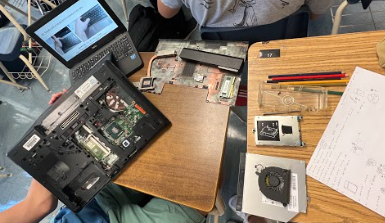

Ashley's Website
Glad you're here!
My Journal
8/29/22 - 9/2/22
Week 2
This week we worked on creating our Rube Goldberg Machines. I created a pulley, a lever, and a inclined plane. We also
worked on a challenge which allowed us to create 3D desgins on tinkercad. For my challenge, my reference was a 23lb dumbell.
We had two judges who choose the best design, I didn'win :( Throguh this challenge I learned how hard it is important to be
specific. I also learned that creating things online is pretty hard. A challenge I had was to duplicate/overlap shapes
together. My friend taught me how to solve this problem. She told me how the measurements are very important and can help us
align things.
9/5/22 - 9/9/22
Week 3
This week we finalized creating our Machine and decided on which machine we would decide. We decided to go with Theo's desgin.
It was unique and different from all of ours. Instead of the common choice of using a incline plane to pop the ballon, he
did something different. He used strings to play out an action which then lead to another action. On Friday, we worked on
our Challenge #3. We designed the letter E and had one of out classmates use our design to cut out the letter E. Through
this challenge I learned how important measurements are. Not only that, but I also learned that the measurements need to be
accurate. An example is that the left height (|) of the E has to equal the three small lengths (-) of the E.
9/12/22 - 9/16/22
Week 4
On Monday we discussed some of the challenges people had with Challenge #3. We also talked about what we learned through this
challenge. After, we broke into our groups. We started to create our Rube Goldberg Machine. Since it was banking day we couldn't
finish much. We discussed what materials we need to bring and talked about how we planned on creating the model. On Wednesday we
finalized creating our machine. Theo drew out the shapes needed for the machine and the rest of us either cut or folded those
shapes. Our machine works! I learned that engineering requires teamwork and deatialed measurements. On Friday, we made paper
boats that can float on water with weights.Our team lost right away because I thoguht the smaller the surface area, the
longer it floats. I was mistaken, we had to creater a baot with a large surface area in order for the boat to float with
heavy weights.

9/19/22 - 9/23/22
Week 5
On Wednesday, we tested our Rube Goldberg Machines; it worked! Our group was the first group to actually pop the ballon.
Through this machine making project I think I was able to learn a lot. I never imagined that being specific is really
important in engineering. I also learned how to use tinkercads. On Friday we worked on finalizing our machines. My group
already tested, so I just worked on my website. I created dash lines to separate the weeks. I also created a boarder
around the images. Thanks to these features, now my website looks a lot neater.
9/26/22 - 9/30/22
Week 6
On Wednesday, we started dissecting computers. The most important part was to know which skwer belonged to what.
In order to keep track, we had to write down all our steps. Also a guest speaker came and talked to us about
computer engineering. Even though I'm not interested in computers, I enjoyed dissecting the computers and learning
about all their parts. On Friday we started coloring in our computer parts worksheet. I learned more about the
"computer vocabulary." We also worked on putting back our computer parts. Through this dissection I learned more about
computer parts. I also learned how complicated computers can be.

10/3/22 - 10/7/22
Week 7
On Monday we talked about what we learned through dissecuting computers. We also got an introduction to bioengineering.
Even though I'm not interested in this pathway, I was invested in the making of scientific products. Such as, hearing
aids and fake/mechanical arms and legs. On Wednesday, we researched an animal who lost a body part. I choose a horse
without a leg, so my job is to use tinkercad to design a prosthetic leg for that horse. Some of the materails I will
be using are a titanium and a 3D printed, sock like thing. The picture on the right is my reference image and the picture
on the right is my design. As you can see through the tinkercad image, I my three parts: the black part, the "C", and a
gray part. The black part acts like a sock which helps hold the horse's leg. The "C" is like the knee, which allows the
horse to bend their leg. The gray part acts like the foot. that hold the horse's weight and allows it to walk. On Friday,
we did an activity where we made sandiches. A student would create a sandwich using instructions from another student.
Through this lesson I learned that being specific is very important.

10/10/22 - 10/14/22
Week 8
On Tuesday we were introduced to aerospace engineering. It's an engineering concerned with the development of aircrafts
and spacecrafts. I was interested in this type of engineering because I am interested in the field of aircrafts. I enjoyed
talking about the parts of an airplane. We also started on making and designing our plastic bottle rockets. I will be using
two pieces of paper as my nose cone. That cone will have my plastic bag, parachute in it. That bag will be attached to the
plastic bottle, filled with water. The cardboard fins on the side will help the rocket stand. Finally, the pressure from
the air pumper and the water, will cause the rocket to shot. On Thursday we did a challenge: creating a flying paper that
can hit the trash can. I made mine based on the "World Record Paper Airplane Distance Wise" but I realized that we need to
take into consideration the wind current and the aim of the plane.


10/17/22 - 10/21/22
Week 9
On Monday we started working on our rocket making. We first made a design on paper then we got precise meaurements and
designed it onto tinkercad. On Wednesday we started creating our rocket. We first measured the cardboard and started
cutting the fins. We used Theo's design but he wasn't able to come to school so it was a little difficult to undestand
(exactly) how the rocket is suppose to look like. Since the "owner" of the rocket wasn't here. We added weight to the
front of the rocket so that the rocket launches straight (so that it goes far). On Friday we tested our rockets. Out
group's rocket was one of the ones that got launched the furtherest. I really enjoyed building this rocket and I was
satisfied with the result.

10/24/22 - 10/28/22
Week 10
On Tuesday we talked about last week's assignments. We talked about what we learned through building rockets, what we
could've done better, and so on. After, we worked on our websites and made it better. On Thursday, we started class with
a challenge. The challenge was to see how many candy corns and fit on a paper. However, our group's answer was way off.
After the challenge we were divided into groups and started our environmental engineering. Out of plastic bottles we made
something that can filter dirty water. Our's wasn't the cleanest, but the water did get cleaner. We put tissue on the bottom,
then the rocks, dirts, etc.
10/31/22 - 11/4/22
Week 11
This week was focused on electrical engineering. On Tuesday Ms. Petrosian introduced us to what electrical engineering is. We also worked on the OHMS Law worksheet.
Through this worksheet I learned what votage, resistance, and current were. On Thursday we started talking about what a breadboard is. R: Resistance; V: Voltage;
I: Current. The unit measurements of these quantities are Ohm, Volt, and Amp respectfully. We also started designing our breadboards on tinkercad. I learned that
the higher the ohms the less the resistance resists. I learned this when we tried changing the resistor resistance from 1kohms to 100ohms. That one resistor lit up
brighter than the other ones.
11/7/22 - 11/11/22
Week 12
On Tuesday we started on some projects related to electrical engineering. We started the day with working on a Circuit Multimeter Practice worksheet. While doing the
worksheet we started lighting real LED lights. We used breadboards to connect cords to each other depending on whether or not its positive or negative. Through this
experience I was able to learn many things. Such as, how to find voltages, resistance, and currents using cords. At the beginning I had a hard time understanding which cord goes to which
slot on the breadboard. But, through help from my classmates I was able to understand a little more about what electrical engineering really is. However, I didn't
really enjoy this lesson. I had a hard time understanding the concept and being able to use this in my projects.
11/14/22 - 11/18/22
Week 13
This week we started working with Arduino. On Monday we set up our Arudino account. On Wednesday we started to use our Arudino account to code and light up LED lights.
Last week's engineering projects were pretty hard but this time I understood the lessons. I understood what I needed to code in order to light up the lights. And I also
knew what wire needed to go were. I believe this week was easier because I learned from my mistakes, last week. An example is last week I had a hard time knowing which wire
goes where, but know I'm confident I know which wire connects with what. Still, I think electrical engineering is difficult. And it's something I believe I won't be pursuing.
11/28/22 - 12/2/22
Week 14
Progress Report
12/5/22 - 12/9/22
Week 15
Progress Report
12/12/22 - 12/16/22
Week 16
Progress Report
1/9/23 - 1/13/23
Week 1
This week we started a new project. On Wednesday we played games such as "what's the word on my head" and the Trolley game. My group saved either ourselves
or our loved ones. On Friday, we got introudced to shark tank. Shark tank is a reality TV show where contestants pitch their products and businesses to
a panel of investors in the hopes of securing a deal. Our new project is to do a "shark tank" in school. We would have to come up with a design and present
it. This week we started our business engineering topic. I am pretty excited for this because I have some interest in business and I enjoy watching shark
tank. The problem our group is having, is coming up with a design that many would need in their daily lives and isn't impossible to make.
1/18/23 - 1/20/23
Week 2
This Wednesday we did a shark tank presentation. Our model was a camera glasses; a glasses with a camera in it. We made sure to describe our object, say how
much money we want for a certain percentage, and our target audience. We mentioned how these glasses would help record/ take pictures of our on going day. I
believe this was one of our best projects. We tried our best to capture the audience's attention and promot our object. On Friday, we made ooblecks, a slime
like mixture with corn starch and water. At first, we failed because we put all the ingredients at once. Also I believe that we put way too much water casuing
the oobleck to be very liquidy. We tried again we made sure to put little by little.
Shark Tank
1/23/23 - 1/27/23
Week 3
This week we worked on our semester 2 project. By using the broad engineering disciplines we are going to do our "final" project. I decided to do the campus
research project. We design experiments and tests to adminsiter with a designed solution. We will be using bio, chemical, environmental, civil, research, test,
and design process. This week we worked on our project proposal. But I couldn't work on it because I was absent on Wednesday and had a short time on Friday.
1/30/23 - 2/3/23
Week 4
This week we focused on making a design for our project. Since my project needs approval before actually making it, my partner and I came up with questions we can
ask. After, we went to the cafeteria manager and told her our ideas, she told us that our idea was good, but would need the administrator's approval. So, we went
to the administrators and they sent us to Mr. Yi. Mr. Yi told us to email Dr. Gonzalez, and we're waiting for his response. Everyone we talked to told us the idea
of shorting the lunch lines is good. They also told us that by doing so they believe the school will change for the better. Through this project I was able to
experience how hard it is to change something in school. I also learned that it takes a lot of work to change things. I learned that behind the scenes many school
employees and teachers are doing their work for the students' benefits.
2/6/23 - 2/10/23
Week 5
On Monday, we worked on our design for the project. On Wednesday, my partner and I revised our interview questions we plan on asking. Since Mr. Gonzalez didn't reply yet,
we decided to wait until Friday to hear from him. In the email we gave a brief explanation of our project/idea and asked for an appoitment to tell him more details. We
also decided to draw our design so it's easier for him to understand/follow. On Friday we had a challenge. The challenge was to hold a water ballon using a ruler, popsicle
sticks, and rubber bands. Our design was pretty good but it was not efficent when running with it. Our ballon didn't pop but it did fall off when we started running. Over the
break, Mr. Gonzalez replied to our email and we are discussing what date would best fit our schedule.
2/14/23 - 2/17/23
Week 6
We worked on our project during this week. We measured our poster papers so we can fit the cafeteria windows. We worked on making a prototype for our design. We wrote certain
food names and tired to fit the poster paper onto the cafteria window. By doing so we learned that measurements are key. We went to the library to get poster papers. Then we
measured the cafteria window. Then, we cut the paper according to the window size. Lastly, we wrote the food name. That's how we finished making our prototype over the week.
2/20/23 - 2/24/23
Week 7
Absent
2/27/23 - 3/3/23
Week 8
On Wednesday, we had our appoitment with Mr. Gonzalez. We told him our idea about the cafeteria issues, tariffic, etc. He told us he agreed with the tariffic jam and told us our
idea is good. We agreed to keep him updated with our project and how everything goes. We also decided to work on our survey. We were going to make a google form asking the students
what they enjoy eating for lunch and snack. But, before we do that we need to talk to the cafeteria manager so that we have a list of foods that they serve. Using those we plan on
asking the teachers to share the google form survey with the students during homeroom. Through this we will get to know what most students get for lunch and snack. According to that
we will have more lanes for that certian favorite.
3/6/23 - 3/10/23
Week 9
On Tuesday, we worked on our websites and just having a time to reflect on our project. We had a survey/google form to grade ourselves and our partners. This helped me organize my
thoguhts for our project and I was able to think about what worked and what didn't work in our project. On Thursday, we did an activity where we made a boat that can go far with
8 breaths/the wind. When we were designing this we were thinking about what we should do to make the design go farther. Our solution was to make the boat lighter in order to do so,
we put less supplies into our boat. We did do that but, our boat only went 2 foot and 3 inches. I think we can improve by using less materials/supplies.
3/21/23 - 3/24/23
Week 10
Absent
3/27/23 - 3/31/23
Week 11
On Monday we watched a robotics video about engineering, the video showed us a lot of types of robots. On Wednesday, we worked on building andtesting the egg drop device. I was absent
on the days we created the egg toss tinkcad and design so I did not know much. My partners updated me on what was going on. The goal is to make a device to make the egg not crack from a
high point. We drop the egg from a high building without breaking it, we need to make a "box" that would help support it. Our design was making a box out of cardboards and putting paper
and cotton balls in it. We would add a parachute, aka a garage bag, and use it to let the egg fall gracefully. We made the design today and tested it, the test went pretty well. I believe
our design was a success and that the egg would not crack.
4/3/23 - 4/7/23
Week 12
This week we started to work on our final project. Our final project is to make a cardboard boat that will hold two people and float on water. The materials that we are given: unlimited
cardboards and one roll of duct tape. The difficult part of this project is to make the boat float wiith only one roll of tape. We first made a deisgn with the correct measurements. We
then choose the best design and made a tinkercad of it. We decided to make our boat like a canal, so it's pretty low. The difficult part of the designing was the measurements. it was hard
to know how wide and how long the boat had to be. I believe it is still quite impossible to make a cardboard boat float with two people in it.
4/10/23 - 4/14/23
Week 13
On Monday, we worked on our website because the AWS was shut down. This week we worked on buulding our cardboard boat. Since we didn't have tape right now, we just cut out our boat pieces.
The problem/concern we have right now is that we don't think we'll have enough tape. Because we wanted to make four paddles and double layer all of them. An example is that Yenah will stir
the left side with one paddle and the other person does the right side. We will make two more just in case one of them breaks. The thing that's bothering me is that cardboards bend easily
and it soaks pretty fast too. In order to solve that, we are making two more paddles as a back up. That means we will need a lot of tape, which we don't think we'll have.